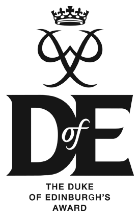

Experience Gained
Table of contents
Kainos

EAYL Apprentice Software Engineer (2019 - currently)


EAYL Year 1 Academy
2019
High school
Antrim Grammar School (2012 - 2019)

2018 - 2019
PC4U was my A-Level coursework. This is the project I learnt C# with, as well as Visual Studio and SQL. Uploaded to GitHub for backup and educational purposes.
Lucky Name Number was my solution to my GCSE coursework. Uploaded to GitHub for backup and educational purposes.
ICT fair
2014
My school's ICT fair in 3rd year arguably was what kicked off my passion for programming and computing. We were tasked to research a company in any industry, of which the choice was ours. My team and I decided to do the Computer Gaming industry, and our chosen company was Nintendo. I was technical director, responsible for programming the site, and we came first place overall. While most of the website's programming has been lost to time, I do have this screenshot from 2014 upon the websites completion.
{kind=link}
While in school I gained other technical and non technical skills, as well as working on some projects in my free time which you can read about here
General
Practice in my own time; events I've been to; technology and operating systems I've played with
Windows
2004 - currently
The first memory I have with Windows was actually my granddad's giant beige Windows 98 machine. Fun fact: I was able to type on a keyboard before I could write with pen and paper! My family also had a Windows XP machine at home and I have fond memories messing around with Windows Movie Maker with my dad. I was an early adopter of Windows 10, I had it installed the week it came out and more recently I built my own PC (I know this isn't strictly Windows, but it runs on Windows so I thought I'd mention it).
Linux
2015 - currently
I'm familiar with the terminal/bash/zsh/Windows Subsystem for Linux/Linux Shell.
Playing around with Linux is something I quite enjoy. The idea that I can run an operating system that was written by hundreds of thousands of people from all over the world and I can then go and look at the source for said operating system is something I think is really cool (although I do wish software compatibility for it was a lot higher, if it was I would probably make it my main OS). So far, I have played with Ubuntu (vanilla and Kubuntu), Manjaro (KDE Manjaro) and a little bit of Kali. I also have some experience with Android rooting and modding, not a whole lot and I don't do it anymore since it can mess with the hardware really badly, and if you're without your phone then you're kind of stuck in today's world. (At least, I am!)
macOS
2016 - currently
My experience with macOS started with my role in my school's Sound and Lighting team. Converting files to a readable Mac format, playing around with incompatible file system etc were all part of the job. Recently, I was given a Macbook as my work PC and since then I have learnt more about how to navigate and use macOS more efficiently. Hacking around with the system also made me realise how close the shell is to Linux, using the terminal in macOS was very familiar due to my previous experiences.

Future 16
2016
This was my first hackathon which taught me how to work as part of a team while under pressure, as well as how to do quick prototyping. They also had guest speakers along, who talked about the technology industry and give insights into how it worked

Code Clock
2017
A week long summer course in Queen's University Belfast which taught me the basics of Java programming, which then helped me learn C#

Kainos CodeCamp
2018
A two week long event run by Kainos at Queen's University Belfast. I gained skills and knowledge in Java, chatbots, cyber security, Arduino programming and HTML/CSS/JS. It's what inspired me to sign up for the EAYL apprenticeship. I came third place, with this website

Kainos Work Experience
2018
A week long course that taught me about Kainos, HTML, and other similar technologies that were introduced to me at CodeCamp. Came first at the hackathon they had at the end, along with the other members of my team.
Open Source Projects
Ongoing
I have various projects I'm working on which can be viewed at my GitHub
Programming languages
Date shows when I was first introduced to the language, but I still use these languages and probably would be able to help you if you needed it
HTML/CSS/JS
2014
Python
2015
Java + Android
2017
C#
2018
Non-technical experience
Experiences I have outside of IT (such as volunteer work and clubs I'm part of) as well as awards and achievements
EA Saturday Morning Windband and Orchestra
2012 - 2020
The EA Windband taught me how to be a better musician, and how to work as part of a large group to put on a production. It also taught me how to coordinate with other people, as you have to listen to cues and signals from both the conductor and other members of the band in order to know when you are supposed to play. I was given a lot of great opportunities here: I have played in competitions, played for the Council of Europe and in a massive shopping mall. I really enjoyed my time in the Youth Wind Band!
AV Production
2015 - 2023
While technical in nature, being a part of AV production taught me a lot of skills outside of audio engineering and troubleshooting. I learnt how to think on my feet, communicate with others, how to learn quickly and how to teach people.

Bronze - 2016, Silver - 2017
Gold - 2019

Grade 5 Music Theory
2018
Grade 7 Clarinet
2010 - 2019 (ABRSM)
Grade 5 Piano
2008 - 2018 (ABRSM)
Sound good? Get in touch...